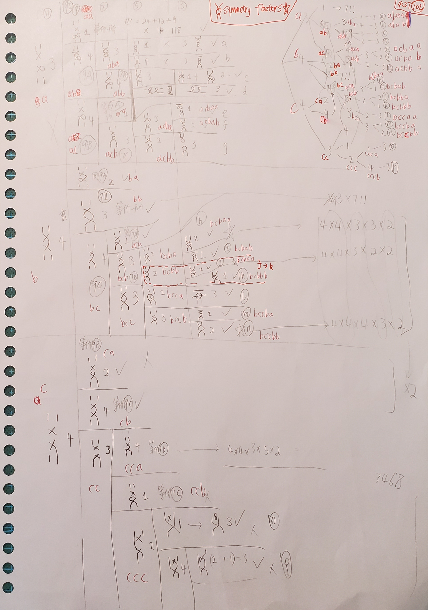

Symmetry Factor of φ-4 Scaler Field
Intro
Zee, A. Quantum field theory in a nutshell. (Princeton University Press, 2010). I.7 Feynman Diagrams 书中 23 页 $(23)$ 式中的 symmetry factor $\frac{1}{2}$ , 自己算出的却是 $\frac{3}{2}$ , 引发了 2021.4.9-2021.4.10 一天 半的计算. 还联系请教了本科毕业就没再联系的小浪底同学.
期间忙于科研和组会, 直到今日才得空整理!
Symmetry Factor
其实本来是很简单的问题. 但是要确信, 或者说保证计算的 symmetry factor 一定是对的, 那就只有把所有的 $J^4, \lambda^2$ (二阶四点格林函数)阶的所有的图都画出来, 才能保证不重不漏. 因为总的图的个数是确定的, 因为根据 wick 定理, $8$ 个算符 contract, 总共有 $11!!$ 种 contraction, 也就是有 $11!!$ 个图. 把这些图分类, 再计算每一类在 $11!!$ 中占的比 重, 就能不重不漏, 准确无误地确定 symmetry factor 了.
下图就是一步一步地连, 每连一步, 都验证图的总个数是 $11!!$ . 最终的结果都归为第二 张图中 a-n 中的某一类. 而 a-n 中些类是一样的, 所以最终结果就是第三张图中 a-l 十 一类.
手工做好分类, 可以用一个程序来保证复杂数值计算的正确性, 最终 a-n 每一类中图的个 数为
('a_', 180)
('b_', 720)
('c_', 1728)
('d_', 1152)
('e_', 216)
('f_', 432)
('g_', 432)
('h_', 864)
('i_', 432)
('j_', 576)
('k_', 288)
('o_', 576)
('p_', 288)
('l_', 576)
('m_', 72)
('n_', 288)并验证总的个数为 $11!! = 10395$ . 至此分类完成!

file:2021-04-27-physics-Symmetry_Factor_Scaler_Field/note2.jpg
file:2021-04-27-physics-Symmetry_Factor_Scaler_Field/diagrams.png
最终 a-n 归类到 a-l 的结果为(第一列有点乱了,仅参考, 重要的结果是第二, 三列)
| a-n | a-l | number | ||
| h, j, n | a | 1728 | ||
| 2c/3, k, p | b | 2304 | ||
| f, g | c | 864 | ||
| c/3, d | d | 1728 | ||
| i, m | e | 1728 | ||
| 12*148, l | f | 1152 | ||
| 72, 72 | g | 144 | ||
| 27 | h | 27 | ||
| 12*6 | i | 72 | ||
| a, 12*3 | j | 216 | ||
| i(编号时把 i 给漏了...) | ||||
| e, 3*72 | l | 432 | ||
| sum | 10395 |
所以 a 图的 symmetry factor 为 $\frac{1728}{2! (4!)^2} = \frac{3}{2}$ . 但应该是 $\frac{1}{2}$ . 这可能是由于需要给固定入射的两个粒子? 或许看到后面会明白吧!
Code
import numpy as np
a = 3
b = 4
c = 4
# ---------------------------------------------
aa = 1 * a
ab = 4 * a
ac = 4 * a
ba = 2 * b
bb = 3 * b
bc = 4 * b
ca = 2 * c
cb = 4 * c
cc = 3 * c
# ---------------------------------------------7
ab += ba
ac += ca
bc += cb
aaa = aa * 7 * 5 * 3
order11 = aaa
aba = ab * 3
abb = ab * 4
aca = ac * 4
acb = ac * 3
bba = bb * 7 * 5 * 3
order12 = bba
bca = bc * 1
bcb = bc * 3
bcc = bc * 3
cca = cc * 4
ccb = cc * 1
ccc = cc * 2
# -----------------------------------------------
abb += aca
abb += bca
bcb += cca
acb += ccb
abaa = aba * 1 * 3
a_ = abaa
abab = aba * 4 * 3
b_ = abab
abba = abb * 3 * 3
c_ = abba
abbb = abb * 2 * 3
d_ = abbb
acba = acb * 3
acbb = acb * 2 * 3
g_ = acbb
bcba = bcb * 3
bcbb = bcb * 2
bcca = bcc * 2 * 3
l_ = bcca
bccb = bcc * 3
ccca = ccc * 1 * 3
o_ = ccca
cccb = ccc * 4 * 3
p_ = cccb
# --------------------------------
acbaa = acba * 1
e_ = acbaa
acbab = acba * 2
f_ = acbab
bcbaa = bcba * 2
h_ = bcbaa
bcbab = bcba * 1
i_ = bcbab
bcbba = bcbb * 2
j_ = bcbba
bcbbb = bcbb * 1
k_ = bcbbb
bccba = bccb * 1
m_ = bccba
bccbb = bccb * 2
n_ = bccbb
# --------------------------------
di = np.array(['a_', 'b_', 'c_', 'd_',
'e_', 'f_', 'g_',
'h_', 'i_', 'j_', 'k_',
'o_', 'p_',
'l_', 'm_', 'n_',
'order11', 'order12'])
sum_all = np.array([a_, b_, c_, d_,
e_, f_, g_,
h_, i_, j_, k_,
l_, m_, n_,
o_, p_,
order11, order12])
print(sum_all.sum())
print(11 * 9 * 105)
for i in zip(di, sum_all):
print(i)
print(h_ + j_ + n_ + 12 * 24)
print(12*(24 + 72 + 9))Reference
- Zee, A. Quantum field theory in a nutshell. (Princeton University Press, 2010). I.7 Feynman Diagrams
- https://physics.stackexchange.com/questions/73382/symmetry-factor-of-a-second-order-four-point-function-term-of-the-phi4-theor